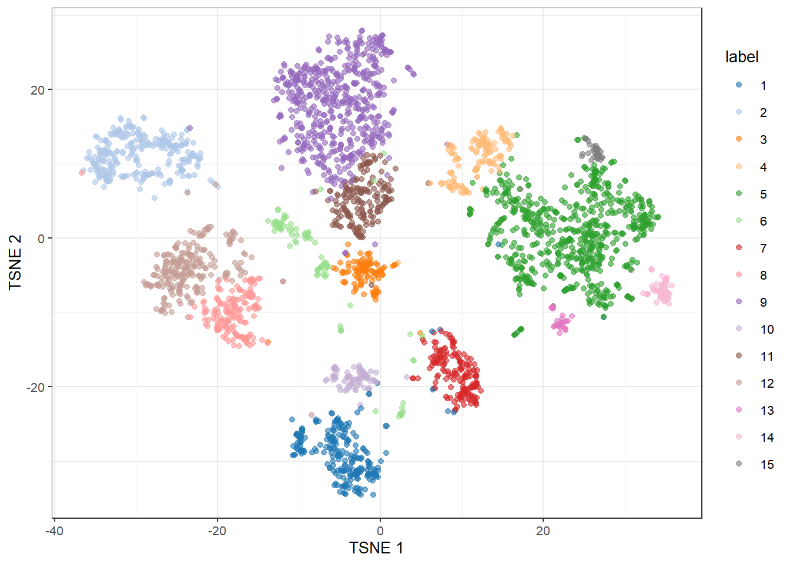
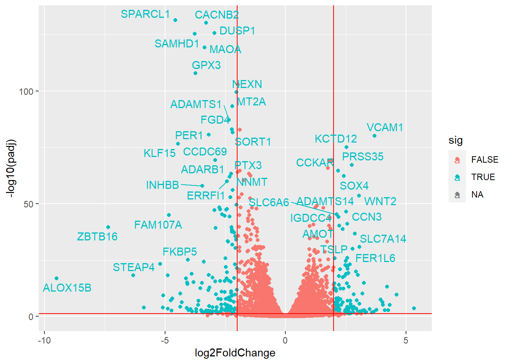

library("DESeq2")
library(airway)
library(tidyverse)
library(ggplot2)
library(Rtsne)24 Common visualizations in biological analyses
For looking at other common plots, let’s take a lot at another data package. This is the airway package, which provides a RangedSummarizedExperiment object of read counts in genes for an RNA-Seq experiment on four human airway smooth muscle cell lines treated with dexamethasone.
data(airway)
se <- airway
dds <- DESeqDataSet(se, design = ~ cell + dex)
rld <- rlog(dds)
keep <- rowSums(counts(dds)) >= 4
dds <- dds[keep,]
dds <- DESeq(dds)estimating size factorsestimating dispersionsgene-wise dispersion estimatesmean-dispersion relationshipfinal dispersion estimatesfitting model and testingres <- as.data.frame(results(dds))24.1 PCA plot
First we can create a principle component analysis (PCA) of the data.
plotPCA(rld, intgroup = c("dex", "cell"))PCA is a dimentionality reduction method. It reduced the dimensionality of our data while maintaining as much variation as possible. In the above data, it would be impossible to view how each of our samples compare across every gene at the same time. PCA finds linear combinations of genes which best explain the variance between each sample. We can see how much variance is explained by each principle component. When examining a PCA plot, we want to make sure that our samples group as expected, mainly, that replicates are closer to each other than to other samples.
For other data, we can use the prcomp function to perform a PCA analysis.
library(ggfortify, quietly=TRUE)Warning: package 'ggfortify' was built under R version 4.2.2df <- iris[1:4]
pca_res <- prcomp(df, scale. = TRUE)
autoplot(pca_res, data = iris, colour = 'Species')24.2 tSNE Plots
t-Distributed Neighbor Embedding (tSNE) is another dimensionality reduction method mainly used for visualization which can preform non-linear transformations. It finds the distances between points in the original, high-dimensional space, then attempts to find a low-dimensional space which maintains distances between points and their close neighbors. tSNE is stochastic, meaning that there is some randomness in its final embedding. Running tSNE multiple times on the same data will give slightly different results.
Many biological analysis pipelines also have built-in TSNE analyses and visualizations. This one is a part of the Bioconductor scater package.
library(scRNAseq)
library(scater)
library(scran)
library(BiocSingular)load("../data/processedZeisel.RData")
sce.zeisel <- runTSNE(sce.zeisel, dimred="PCA")
plotTSNE(sce.zeisel, colour_by="label")
24.3 Volcano plot
A volcano plot is a common visualization to see the distribution of fold-changes and p values accross our dataset. It plots the \(log_2\) fold-change against the p values from our statistical analysis.
res %>%
mutate(sig = padj < 0.05 & abs(log2FoldChange) > 2) %>%
ggplot(aes(x = log2FoldChange, y = -log10(padj), col=sig)) +
geom_point() +
geom_vline(xintercept=c(-2, 2), col="red") +
geom_hline(yintercept=-log10(0.05), col="red")Warning: Removed 8077 rows containing missing values (`geom_point()`).
24.4 Heatmap/Clustergram
Heatmaps are a common visualization in a variety of analyses. By default in the heatmap package pheatmap, the rows and columns of our data are clustered using a hierarchical clustering method. This allows us to view which samples are most similar, and here how the most differentially expressed genes cluster and change across different samples.
The data we are using below is a microarray dataset investigating empryo development in mice which can be read about here.
library(pheatmap, quietly=TRUE)Warning: package 'pheatmap' was built under R version 4.2.2library("Hiiragi2013", quietly=TRUE)Warning: package 'boot' was built under R version 4.2.2Warning: package 'clue' was built under R version 4.2.2Warning: package 'cluster' was built under R version 4.2.2Warning: package 'genefilter' was built under R version 4.2.2
Attaching package: 'genefilter'The following object is masked from 'package:readr':
specThe following objects are masked from 'package:MatrixGenerics':
rowSds, rowVarsThe following objects are masked from 'package:matrixStats':
rowSds, rowVars
Attaching package: 'lattice'The following object is masked from 'package:boot':
melanoma
Attaching package: 'AnnotationDbi'The following object is masked from 'package:dplyr':
selectWarning: package 'XML' was built under R version 4.2.2Warning: package 'gplots' was built under R version 4.2.2
Attaching package: 'gplots'The following object is masked from 'package:IRanges':
spaceThe following object is masked from 'package:S4Vectors':
spaceThe following object is masked from 'package:stats':
lowessWarning: package 'gtools' was built under R version 4.2.2
Attaching package: 'gtools'The following objects are masked from 'package:boot':
inv.logit, logitWarning: package 'MASS' was built under R version 4.2.2
Attaching package: 'MASS'The following object is masked from 'package:AnnotationDbi':
selectThe following object is masked from 'package:genefilter':
areaThe following object is masked from 'package:dplyr':
selectWarning: package 'xtable' was built under R version 4.2.2library("dplyr", quietly = TRUE)
data("x")
# Create a small dataframe summarizing each group
groups = group_by(pData(x), sampleGroup) %>%
summarise(n = n(), color = unique(sampleColour))
# Get a color for that group
groupColor = setNames(groups$color, groups$sampleGroup)
topGenes = order(rowVars(Biobase::exprs(x)), decreasing = TRUE)[1:500]
rowCenter = function(x) { x - rowMeans(x) }
pheatmap( rowCenter(Biobase::exprs(x)[ topGenes, ] ),
show_rownames = FALSE, show_colnames = FALSE,
breaks = seq(-5, +5, length = 101),
annotation_col =
pData(x)[, c("sampleGroup", "Embryonic.day", "ScanDate") ],
annotation_colors = list(
sampleGroup = groupColor,
genotype = c(`FGF4-KO` = "chocolate1", `WT` = "azure2"),
Embryonic.day = setNames(brewer.pal(9, "Blues")[c(3, 6, 9)],
c("E3.25", "E3.5", "E4.5")),
ScanDate = setNames(brewer.pal(nlevels(x$ScanDate), "YlGn"),
levels(x$ScanDate))
),
cutree_rows = 4
)24.5 Network visualization
We also sometimes want to visualize networks in R. Network visualization can be difficult, and it is reccomended to use programs like cytoscape for creating publication-ready network figures. However, igraph is a popular package for handling and visualizing network data in R.
library(igraph, quietly = TRUE)g <- make_ring(10)
plot(g, layout=layout_with_kk, vertex.color="green")The materials in this lesson have been adapted from work created by the (HBC)](http://bioinformatics.sph.harvard.edu/) and Data Carpentry (http://datacarpentry.org/). These are open access materials distributed under the terms of the Creative Commons Attribution license (CC BY 4.0), which permits unrestricted use, distribution, and reproduction in any medium, provided the original author and source are credited.